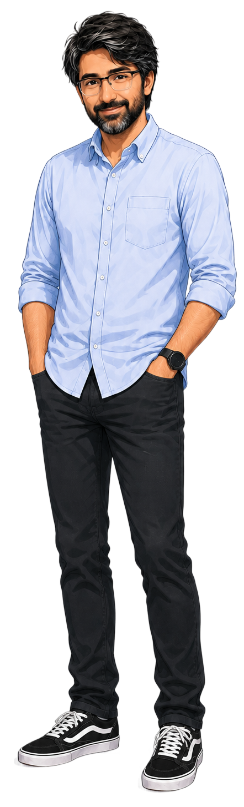

A clean illustrated full-body cutout portrait on a transparent PNG \u2014 cool, neutral palette (blue oxford shirt, charcoal jeans). v2: the pale-blue blob behind it was removed \u2014 the figure now floats free on cream, letting the serif display carry the composition.